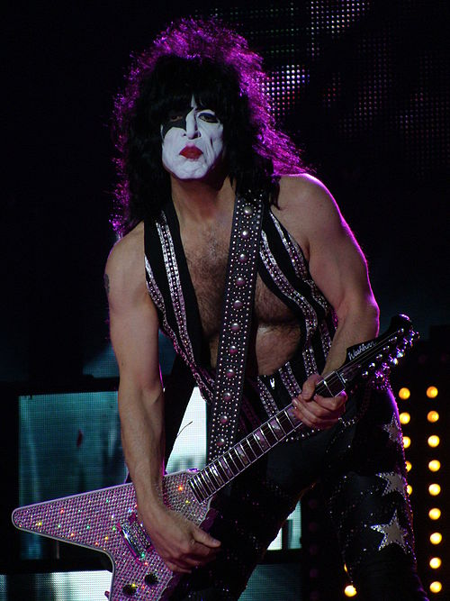
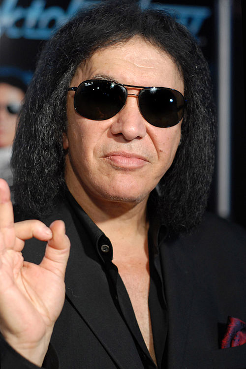

Пол Стенлі (англ. Paul Stanley; справжнє ім'я — Стенлі Гарві Айзен (англ. Stanley Harvey Eisen); нар. 20 січня 1952, Мангеттен, Нью-Йорк) — американський музикант, гітарист і вокаліст рок-групи Kiss. Разом з Джином Сіммонсом є одним із засновників групи, автор і співавтор більшості хітових композицій Kiss, таких як «Rock and Roll All Night», «Detroit Rock City», «I Was Made For Lovin' You», «I Want You», «Love Gun», «Creatures Of The Night», «Crazy Crazy Nights», «Forever» та багатьох інших.
(англ. Gene Simmons, ім'я при народженні — Хаїм Віц; 25 серпня 1949, Тірат-Кармель, Ізраїль) — американський бас-гітарист, вокаліст, актор і підприємець. Найбільш відомий як один із засновників групи Kiss, який виступає під сценічним псевдонімом The Demon, пускаючи з рота штучну кров, дихаючи вогнем і висовуючи язик.
